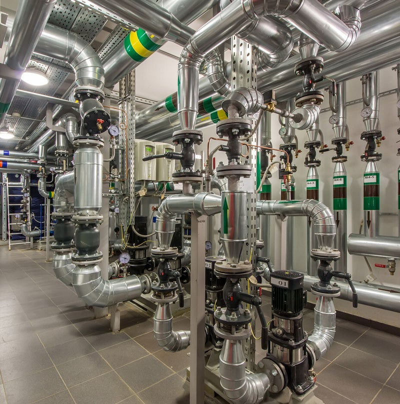
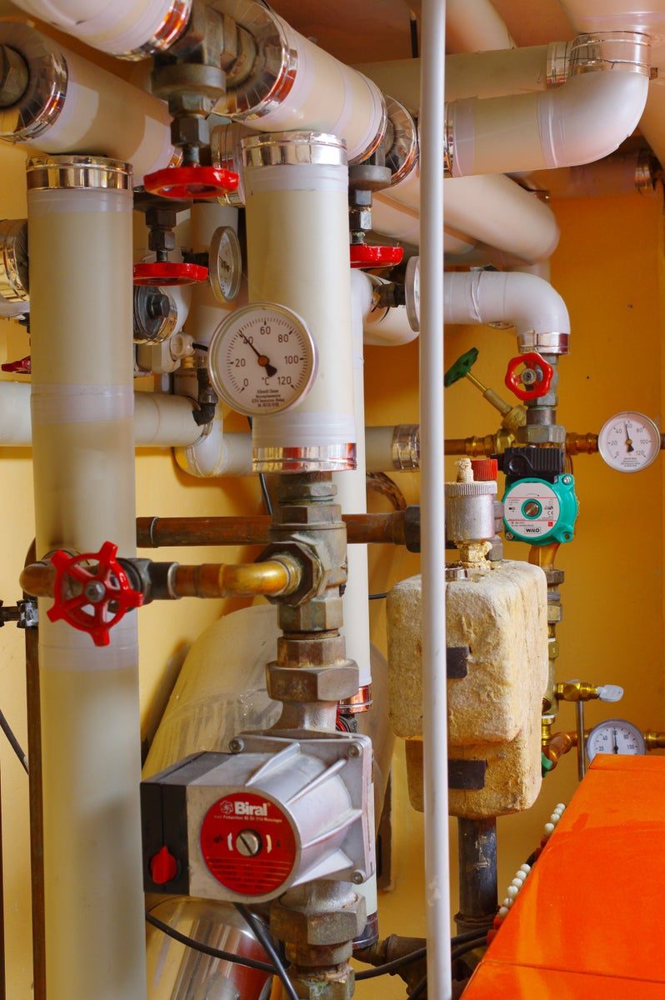
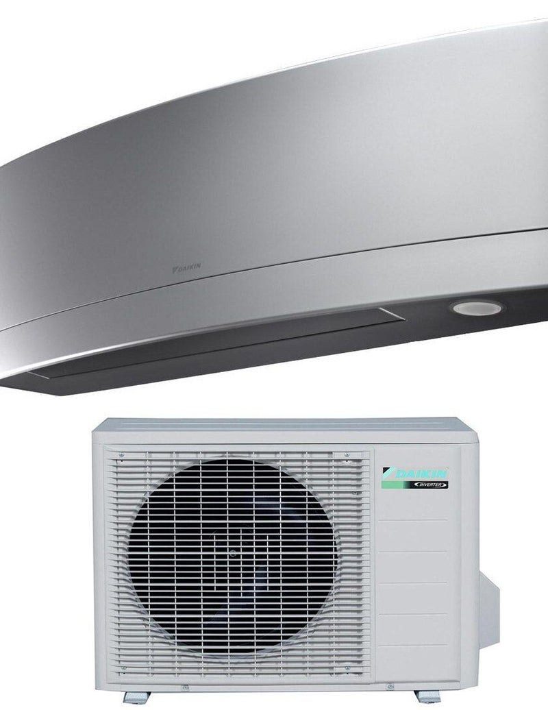
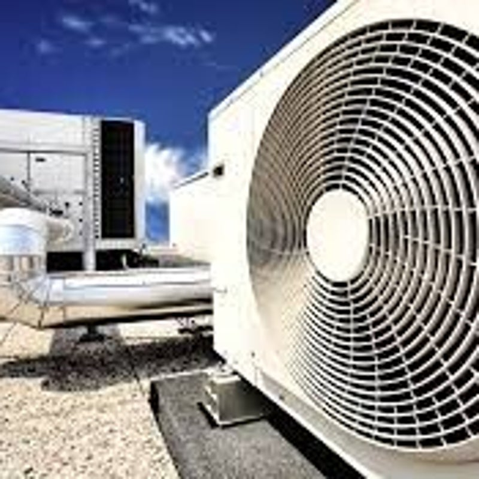
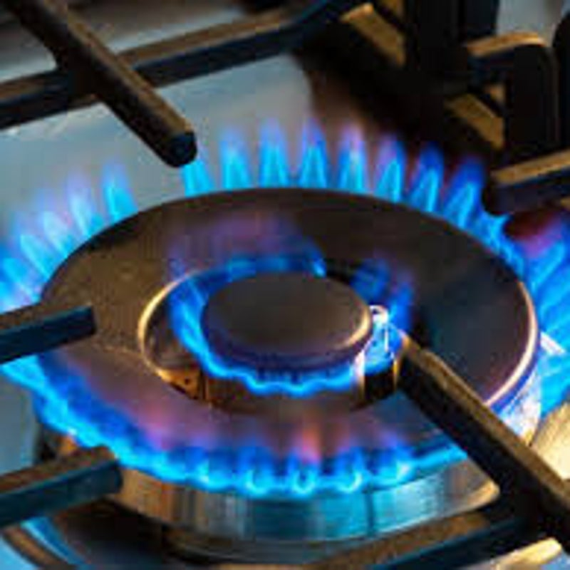

Impianti termoidraulici
Installazioni su misura, trattamento aria e acqua, radiatori, termoarredi, rubinetterie e sanitari.
Maggiori informazioni
Termoidraulica a Verona
Gianni Faccioli Termoidraulica offre soluzioni professionali e affidabili per privati e aziende: installazione, manutenzione e sostituzioni con preventivi gratuiti e senza impegno.
Servizi
Dalla scelta dell'impianto alla manutenzione periodica, ogni intervento viene valutato in base agli spazi, ai consumi e alle esigenze reali dell'abitazione o dell'attivita.

Installazioni su misura, trattamento aria e acqua, radiatori, termoarredi, rubinetterie e sanitari.
Maggiori informazioni
Scelta del miglior impianto di condizionamento in base alle esigenze dell'abitazione.
Maggiori informazioni
Manutenzione e sostituzione caldaie per sicurezza, funzionalita e rendimento nel tempo.
Maggiori informazioniInterventi
Climatizzazione, riscaldamento, idraulica e gas richiedono componenti affidabili, posa corretta e manutenzione nel tempo.


Chi siamo
Gianni Faccioli Termoidraulica è un'azienda con anni di esperienza nel settore termoidraulico. Siamo appassionati del nostro lavoro e ci impegniamo ogni giorno per offrire servizi di alta qualità ai nostri clienti.
Lavoriamo per privati e aziende a Verona e in provincia, con soluzioni professionali per riscaldamento, climatizzazione, idraulica, gas e manutenzione.
Domande frequenti
Siamo aperti dal lunedi al venerdi dalle 8:00 alle 17:00.
Lavoriamo con le migliori marche sul mercato, garantendo qualita e affidabilita.
“Ho contattato la ditta Faccioli per un problema urgente e sono rimasto molto soddisfatto del servizio. Professionisti competenti e disponibili in ogni situazione. Consigliatissimi!”
Preventivo gratuito